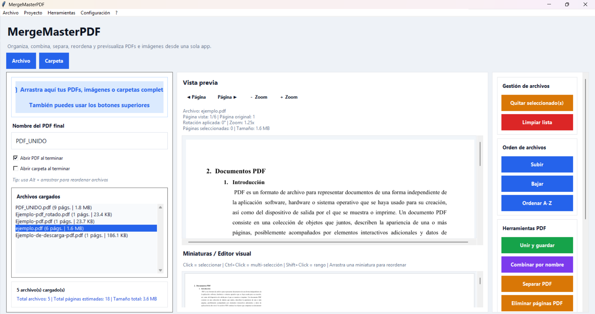
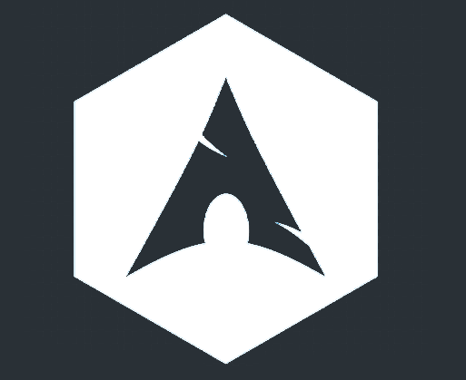
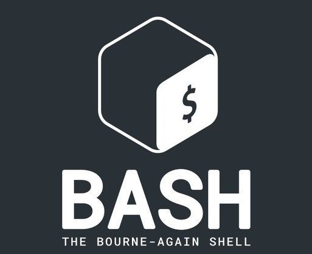
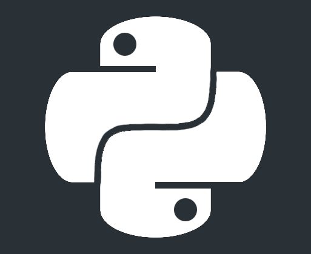
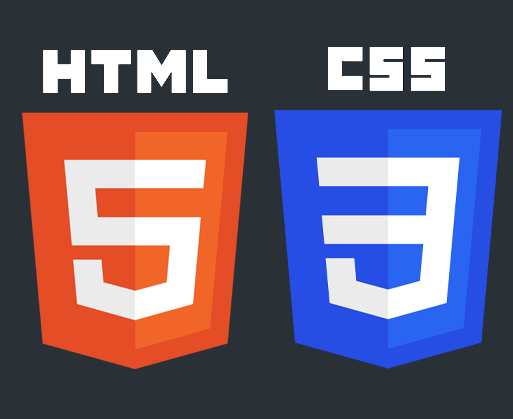

Mi nombre es Alan Juarez, Ingeniero en Sistemas Computacionales con experiencia en integración de sistemas, automatización de procesos, manejo de datos y desarrollo de herramientas para optimizar flujos de trabajo.
Actualmente trabajo en proyectos relacionados con integración de documentos electrónicos, automatización de procesos empresariales y desarrollo de herramientas en Python para mejorar la productividad y reducir tareas manuales.
Me interesa el desarrollo de software, la automatización, Linux y la creación de herramientas que resuelvan problemas reales. Constantemente estoy aprendiendo nuevas tecnologías y desarrollando proyectos personales.

Aplicación de escritorio para unir PDFs, reorganizar archivos y facilitar la gestión de documentos de forma rápida y sencilla.

Entorno personal de escritorio en Arch Linux utilizando Qtile y otras herramientas para crear una experiencia eficiente, personalizable y orientada a productividad.

Script desarrollado en Shell para automatizar procesos de actualización en sistemas Linux basados en APT.

Proyecto de programación en Python que demuestra lógica básica y desarrollo de un juego de consola inspirado en Pokémon con jugabilidad estilo snake.

Desarrollo de esta página web como portafolio personal para presentar experiencia, proyectos y perfil profesional.
Desarrollo herramientas de software como proyectos personales enfocados en automatización, manejo de archivos y productividad. Uno de mis principales proyectos actuales es MergeMasterPDF, una aplicación de escritorio para gestión de archivos PDF.
Experiencia profesional, formación y conocimientos en distintas áreas de tecnología.
• Edicom México – Ingeniero / Consultor de Integración de Sistemas
Junio 2024 – Actualidad
Participación en proyectos de integración de documentos electrónicos, automatización de procesos empresariales y soporte técnico especializado.
Desempeño de roles como líder de proyecto, líder de equipo y consultor técnico, participando en la planificación, seguimiento y ejecución de proyectos tecnológicos, así como en la coordinación de actividades técnicas y operativas.
Responsabilidades incluyen análisis y resolución de incidencias, configuración de entornos, validación de datos, debugging, documentación técnica, pruebas funcionales e implementación de mejoras orientadas a optimización de procesos.
Experiencia en integración de sistemas, procesamiento de datos estructurados, automatización de tareas y desarrollo de herramientas internas para mejorar la eficiencia operativa.
• 22 de marzo de 2022 - 22 de septiembre de 2022
Personal de apoyo a personal docente en UNITEC
Préstamo y recepción de equipo audiovisual, mantenimiento, configuración y reparación de equipo audiovisual, así
como gestión de inventarios de papelería y equipo electrónico.
• 10 de febrero de 2020 - 30 de mayo de 2020
Analista de Infraestructura en Fin Común
Monitoreo de site, gestión de equipos en site, respaldos de máquinas virtuales, cableado estructurado y creación
de página web.
• Egresado de Ingeniería en Sistemas Computacionales
• English Language Seminar
• English as a Second Language course at Advanced – Level 8
• Español – nativo
• Inglés – C1
• Portugués – B2
• Python
• Bash / Shell scripting
• HTML, CSS y JavaScript
• Linux (Arch, Ubuntu)
• Git y GitHub
• Automatización de procesos
• Manejo de XML, JSON y datos estructurados
• Bases de datos
• Integración de sistemas
• Redes y sistemas
• Microsoft Word, Excel, PowerPoint y Teams
• Conocimientos básicos de Power BI
• Conocimientos intermedios en Oracle
• Búsqueda de información para solución de problemas
• Trabajo bajo presión y trabajo en equipo
• Capacidad de aprendizaje y toma de decisiones
• Comunicación y capacidad de diálogo
• Adaptación al uso de diferentes herramientas y softwares
• Organización y gestión del tiempo
• Inteligencia emocional
• Orientación de servicio, empatía y tolerancia